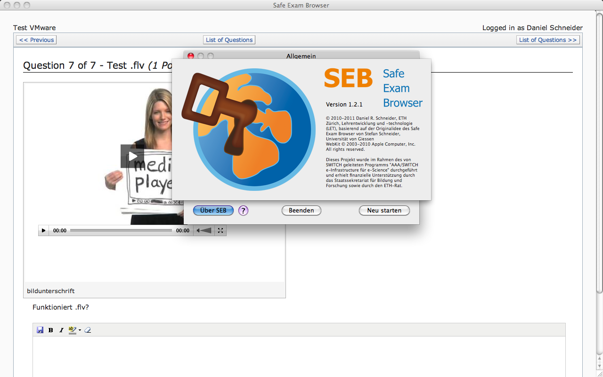
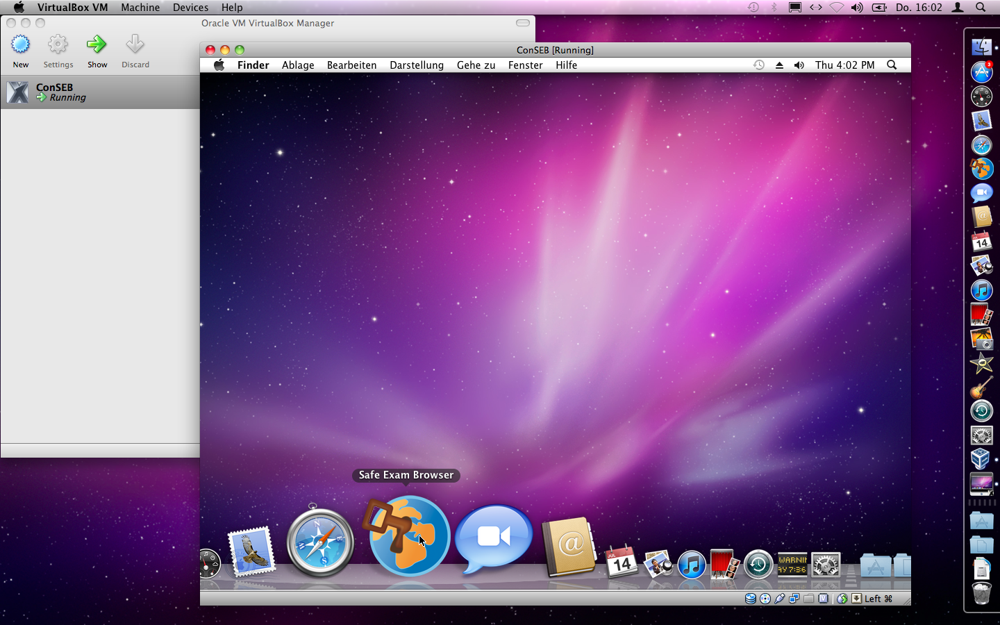
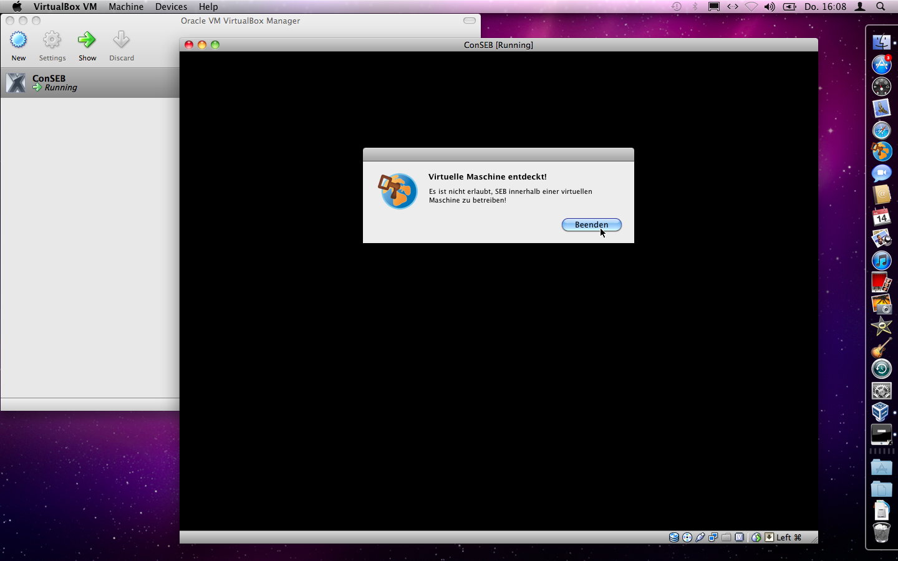

Alles über den Safe Exam Browser … |
English Deutsch |
… in audio-visueller Form: Podcast, Demo-Video und Bildschirmfotos.
Podcast
Interview zum Safe Exam Browser (Audio-Podcast mit Standbildern).
Video-Download als MP4 - WebM - Ogg Theora/Vorbis
Podcast im m4a-Format
Demo-Video
So funktioniert der Safe Exam Browser (in Englisch).
Video-Download als MP4 - WebM - Ogg Theora/Vorbis
Bildschirmfotos

Safe Exam Browser für Mac OS X zusammen mit einer Moodle-Prüfung, deutsch lokalisiertes Einstellungen-Fenster sichtbar

Safe Exam Browser für Mac OS X zusammen mit einer ILIAS-Prüfung, englisch lokalisiertes Einstellungen-Fenster sichtbar

Safe Exam Browser für Mac OS X mit einem ILIAS-Video Fragentyp und dem Fenster "Über SEB"

Hier wird versucht, Safe Exam Browser für Mac OS X in einem virtualisierten OS X zu starten …

… was der VM-Detektor von SEB verhindert.